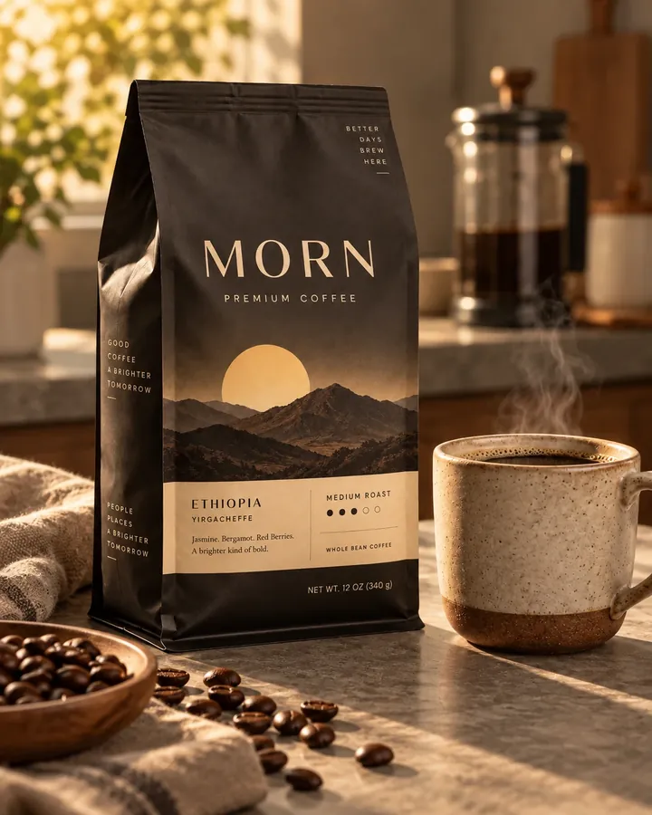

01 / 05
Wschód nad Gedeo
Front każdej edycji MORN nosi grawiurę krajobrazu, z którego pochodzi kawa. Tu: słońce wstające nad wzgórzami Yirgacheffe.
Premium coffee
Kawa dla pierwszego światła.
Zanim świat się obudzi,
jest chwila, która należy tylko do ciebie.
Para nad kubkiem. Ciepło w dłoniach. Cisza.
MORN. Rytuał na pierwsze światło.
III — Opakowanie
Zaprojektowaliśmy torebkę, którą chce się zostawić na blacie. Przyjrzyj się jej z bliska.
01 / 05
Front każdej edycji MORN nosi grawiurę krajobrazu, z którego pochodzi kawa. Tu: słońce wstające nad wzgórzami Yirgacheffe.
02 / 05
Cztery słowa, które czytasz, zanim otworzysz torebkę. Nie slogan — obietnica złożona każdemu porankowi.
03 / 05
Boki torebki mówią o tym, czego nie widać w filiżance: o rolnikach z Gedeo, o palarni w Krakowie i o jutrze, które chcemy robić lepszym.
04 / 05
Jaśmin. Bergamotka. Czerwone owoce. Kremowy papier, czarny druk, zero krzyku — tylko to, co warto wiedzieć przed pierwszym łykiem.
05 / 05
Średnie palenie. Wystarczająco długie, by wydobyć karmelową słodycz; wystarczająco krótkie, by zostawić kwiaty.
IV — Pochodzenie
Etiopia, strefa Gedeo. Kawa rośnie tu w cieniu ensetu i starych akacji, na wysokości, na której poranki są chłodne, a owoce dojrzewają powoli. Stąd ta jasność w filiżance.
W filiżance
W aromacie, zaraz po zmieleniu.
W pierwszym łyku — jasna, cytrusowa.
W posmaku, gdy kawa lekko przestygnie.
Z torebkiA brighter kind of bold.
V — Rytuał
French press to najprostszy rytuał świata: woda, czas i odrobina uwagi. Zaparz z nami — zegar poprowadzi cię krok po kroku.
Wlej całą wodę okrężnym ruchem. Niech każde ziarno się zanurzy.
Łyżką przełam kożuszek na powierzchni i zbierz pianę.
Przykryj. Nie mieszaj. Popatrz chwilę przez okno.
Powoli opuść tłok i nalej od razu. Dzień dobry.
VI — Dwa poranki
Pierwszy łyk, zanim ktokolwiek zdąży o cokolwiek zapytać.
Notes, kubek, jeszcze bez maili. Dzień zaczyna się po swojemu.

VII — Twój poranek
Jaśmin · Bergamotka · Czerwone owoce